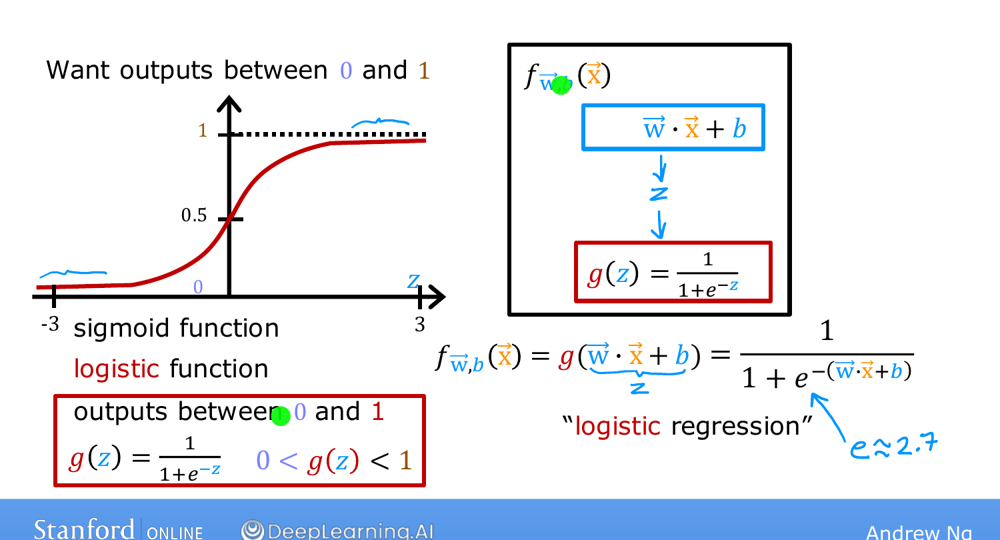
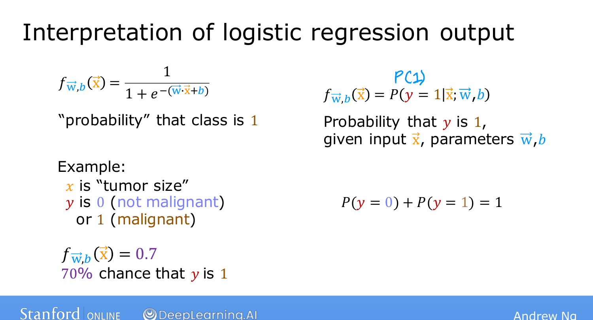

Logistic Regression¶
Course 1 · Week 3 · AI-generated study aid — not authoritative; trust the lecture & cited sources.
Logistic regression is probably the single most widely used classification algorithm
in the world. Instead of a straight line, it fits an S-shaped curve to the data.
[00:00]
The sigmoid function [01:32]¶
The building block is the sigmoid (a.k.a. logistic) function, which maps any input \(z\) to an output between 0 and 1:
where \(e \approx 2.7\). Reading off its behaviour:
- \(z\) large positive → \(e^{-z}\) is tiny → \(g(z) \approx 1\).
- \(z\) large negative → \(e^{-z}\) is huge → \(g(z) \approx 0\).
- \(z = 0\) → \(e^{0} = 1\) → \(g(z) = \tfrac{1}{1+1} = 0.5\).
[04:05]
That's the S-shape: it starts near 0, passes through 0.5 at \(z=0\), and rises toward 1.
[04:11]

Andrew Ng's sigmoid slide (Stanford / DeepLearning.AI).Drag the input \(z\) back and forth to see the sigmoid squash it into a 0-to-1 probability, passing through 0.5 at \(z=0\).
Building the model [04:15]¶
Two steps. First, compute the familiar linear expression and call it \(z\):
Then pass \(z\) through the sigmoid. Together:
The model takes features \(\vec{x}\) and outputs a number between 0 and 1. [05:31]
Interpreting the output [05:50]¶
Think of the output as the probability that \(y = 1\). If a patient's tumor gives
\(f(\vec{x}) = 0.7\), the model thinks there's a 70% chance the tumor is malignant
(\(y=1\)). Since \(y\) is 0 or 1, the chance of \(y=0\) is the remaining 30%. [07:32]
(You may see this written \(f(\vec{x}) = P(y=1 \mid \vec{x};\, \vec{w}, b)\) — the
semicolon just signals that \(\vec{w}, b\) are parameters. You don't need this notation for
the course.) [08:21]

Andrew Ng's interpreting the output slide (Stanford / DeepLearning.AI).Try it — implement the sigmoid [08:21]¶
Implement \(g(z)\) with NumPy so it works element-wise on an array (use np.exp).
Run, then Validate:
Next: visualizing predictions through the decision boundary. [09:13]
# Tests(case insensitive)(Ctrl+I)
(Alt+: / Ctrl to reverse the columns)
(Esc)